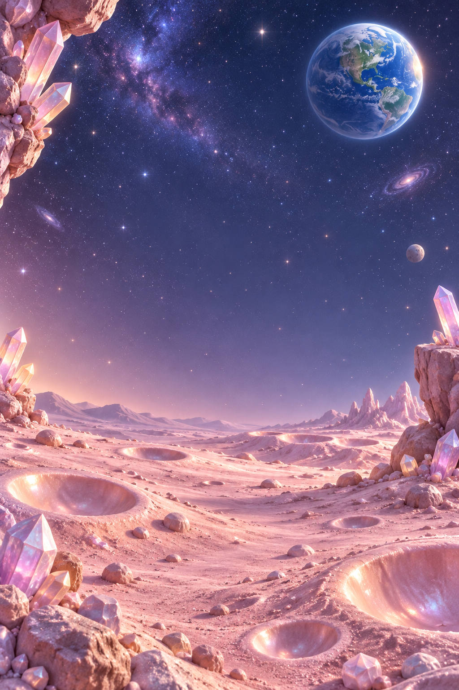

Une nouvelle escale à chaque partie
25 illustrations pour Voyage et Libre. Cette galerie présente les décors seuls ; dans le jeu, la grille reste opaque et les éléments de premier plan s’animent sur les bords. Cliquer sur une illustration pour l’ouvrir en grand.
Les lecteurs permettent de comparer les cinq pistes du mode musical automatique. Aucune lecture ne démarre seule.
En mouvement dans le jeu
Capture de dix secondes sur simulateur iPhone SE, sans piste audio.
Jardins guimauve
The Meadow We Call Home — Eric Matyas
Forêt des sucettes
Light Puzzles 13 — Eric Matyas
Lagon pétillant
Hidden Riddles — Eric Matyas
Sommets givrés
Icicle Wonderland — Eric Matyas
Vallée givréeForêt enneigéeLac de cristalSommet des neigesAurore polaire Voie des étoiles
Puzzles in Faraway Lands — Eric Matyas
Orbite douce
Lune poudréeAnneaux célestesNébuleuse mauveConstellation de Poulpi